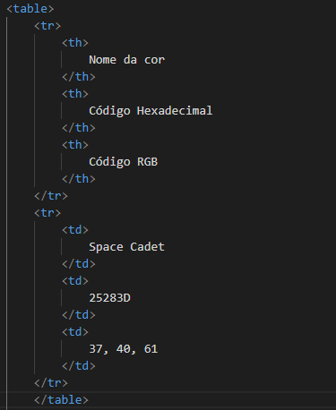

Utilização de outras tags
Tabelas
Utilizamos a tag table para contruír tabelas nas páginas HTML, a sintaxe consiste na tag <table>, e dentro dela adicionamos <tr> para criar uma linha e <td> para cada célula da tabela. No caso de uma célula de título, utilizamos <th> no lugar de <td>. A sintaxe se assemelha a:
Podemos estilizar a tabela e adicionar borda utilizando css, e adicionar uma legenda a tabela utilizando a tag <caption>
Exemplo:
| Nome da cor | Código Hexadecimal | Código RGB |
|---|---|---|
| Space Cadet | 25283D | 37, 40, 61 |
| Plum | 8F3985 | 143, 57, 133 |
| Pearly Purple | A675A1 | 166, 117, 161 |
| Tuscany | CEA2AC | 206, 162, 172 |
| Champagne Pink | EFD9CE | 239, 217, 206 |
Formatação de texto
Utilizamos outras tags para formatar texto também, similar as tags de itálico e negrito, por exemplo:
-
<del>: Mostra o texto riscado, sua sintaxe é <del> texto </del>.
Exemplo:Esse texto foi riscado -
<ins>: Mostra o texto sublinhado, sua sintaxe é <ins> texto </ins>.
Exemplo: Esse texto foi sublinhado -
<sub>: Mostra o texto subscrito, ou seja, menor na parte de baixo de outros caracteres. Sua sintaxe é <sub> texto </sub>.
Exemplo: Esse texto está subscrito -
<sup>: Mostra o texto sobrescrito, ou seja, menor na parte de cima de outros caracteres, pode ser utiliado para representar potência. Sua sintaxe é <sup> texto </sup>.
Exemplo: Esse texto está sobrescrito -
<bdo>: Utilizada para mudar a direção em que o texto aparece, por meio do atributo dir="", com rtl (da direita para esquerda) ou ltr (da esquerda para direita). Sua sintaxe é: <bdo dir=""> Texto </bdo>.
Exemplo: pneumoultramicroscopicossilicovulcanoconiótico
Também podemos utilizar tags para destacar conteúdo do código, principalemnete para ferramentas de busca, como:
-
<blockquote>: Define uma trecho de citação de outra fonte, importante para dar destaque no código a uma citação. Sua sintaxe consiste na tag <blockquote cite=""> </blockquote>.
Exemplo:Com mais de 200 anos de história, a Biblioteca Nacional é a mais antiga instituição brasileira, anterior mesmo à constituição do Brasil como nação independente.
-
<q>: Utilizado com o mesmo prósito da tag blockquote, porém para citações curtas. Sua sintaxe consiste em: <q> Citação </q>, essa tag adicona aspas automaticamente.
Exemplo:
A educação é a arma mais poderosa que você pode usar para mudar o mundo
-
<abbr>: Essa tag destaca uma sigla ou abreviação, se utilizada com "title" pode mostrar o significado quando sobreposta pelo cursor. Sua sintaxe consiste em: <abbr title="significado"> Abreviação/sigla </abbr>.
Exemplo: IMPA -
<address>: Tem como função destacar informações de contato. Essa tag vai mostrar as informações em itálico automaticamente e sua sintaxe consiste em <address> Contato </address>.
Exemplo: Código escrito por Sabrina A. Pedroso
IFPR Campus Irati -
<cite>: Utilizada para citar, com destaque, nomes de obras e trabalhos artísticos num geral. O texto é a automaticamente definido em itálico e sua sintaxe é: <cite> Título da Obra <cite>.
Exemplo: O Pequeno Príncipe - Antoine de Saint-Exupéry
Outras tags que podemos utilizar são:
-
<code>: Essa tag é utilizada para enfatizar um trecho de código, sendo mostrado na fonte padrão do navegador. A sintaxe é: <code> Código <code>.
Exemplo:Trecho de código -
<pre>: Utilizamos essa tag para mostrar um texto formatado exatamente com a formatação recebida no código html, incluindo espaçõs e quebras de linha. Sua sintaxe é: <pre> Texto <pre>.
Exemplo:Esse texto foi pré-formatado :) -
<kbd>: É utilizada para definir que determinado texto corresponde a uma tecla do teclado do computador. Sua sintaxe é <kbd> Tecla <kbd>.
Exemplo: Alt
Multimídias >
Confira a versão original